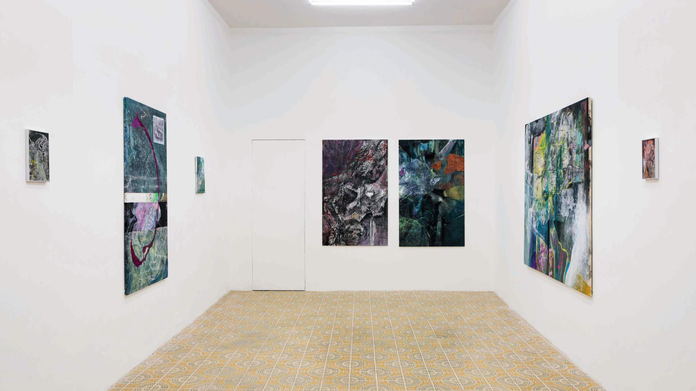
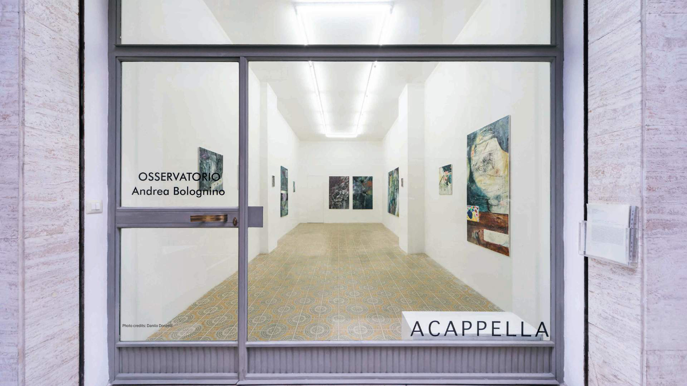
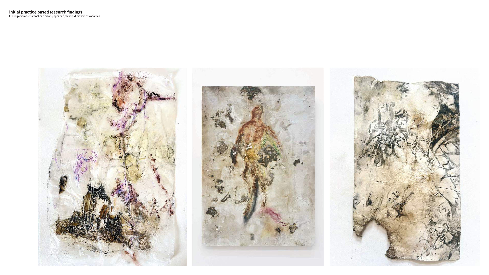
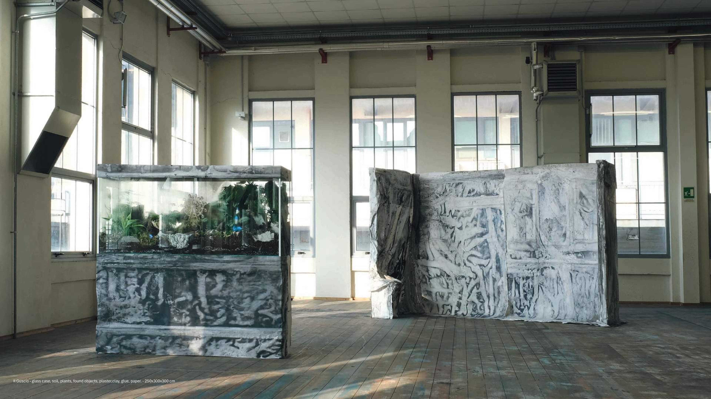
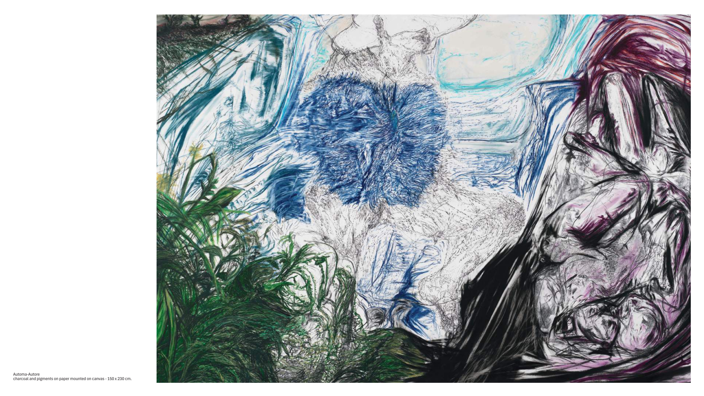
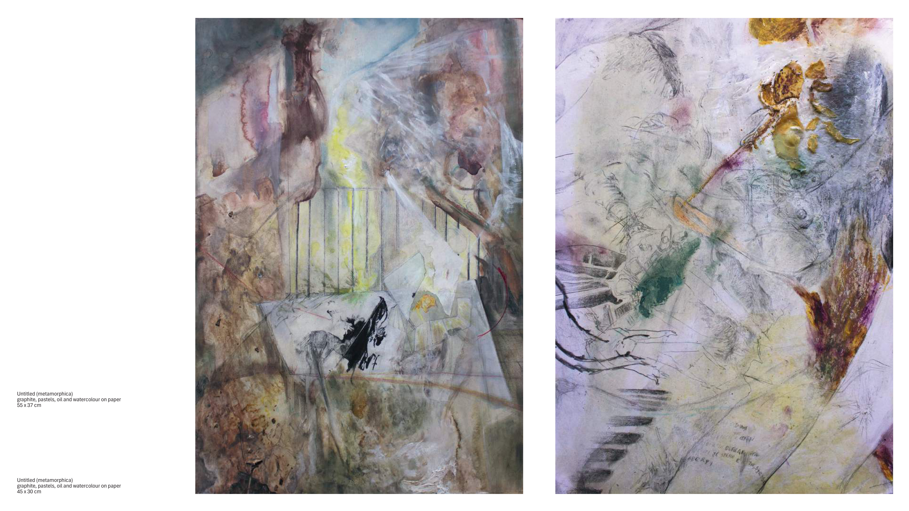
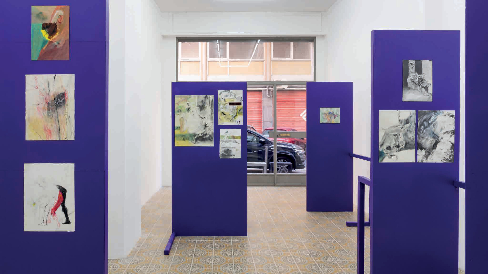
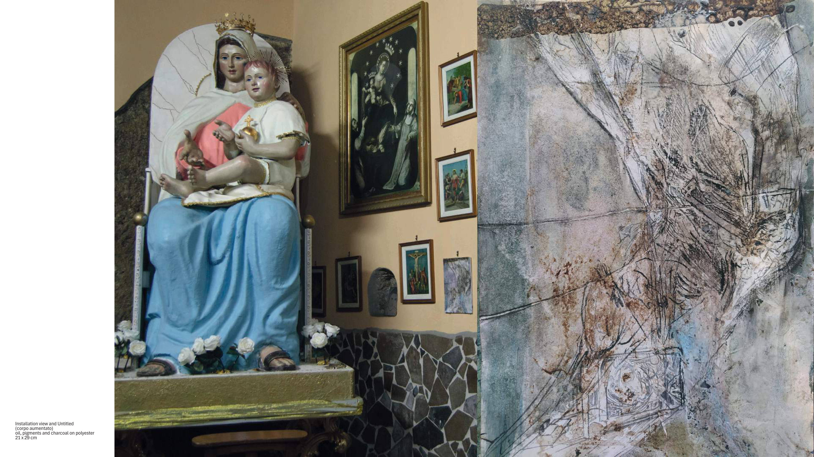
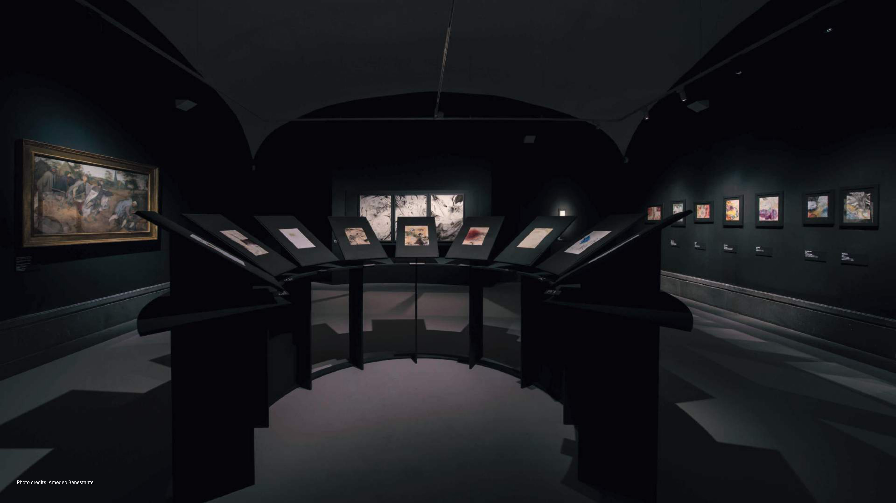
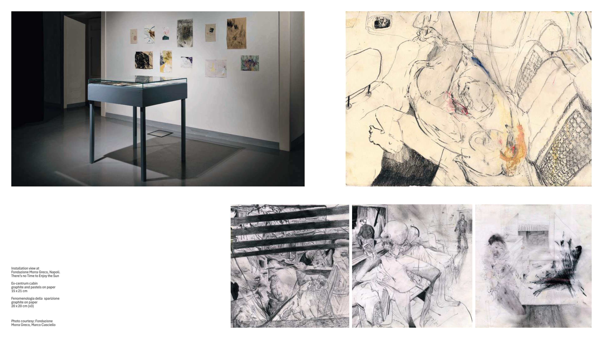

2024
Osservatorio
Galleria Acappella. A visual palimpsest where observation becomes an exploration of multiple layers and dimensions.
Visual Artist
Memory, matter, landscape and metamorphosis as material forces.

My artistic research investigates processes of memory and imagination as material forces that sediment, transform, and reorganize matter over time. I explore forms of representation through different states of matter, treating materials as active agents that retain traces of environmental, symbolic, and cultural stratifications.
Rooted in painting and drawing, my practice expands into sculptural, installative, and video-based forms, where images become spatial and matter behaves as a dynamic process. I am particularly interested in moments of collapse, transformation, and instability, where form remains provisional and open to change.
Through these processes, I seek to blur distinctions between body and landscape, organic and inorganic, perception and materiality.
PHD Project in Visual Art and Creative Practices
For a contemporary expansion of landscape painting, the project approaches landscape through material and digital experiments, organic decomposition, living traces and the cartographic tool of the map.

Selected Projects

Galleria Acappella. A visual palimpsest where observation becomes an exploration of multiple layers and dimensions.

Officine San Carlo. Glass case, soil, plants, found objects, plaster, clay, glue and paper.

Galleria UnosuNove. A contact zone between art and science, real and virtual, human and technological.

A journey from microscopic to macroscopic landscapes of memory and imagination.

A translation of poetic and science-fictional imagery into a dialogue between body and machine.

Mixed-media paintings on polyester reflecting on augmented, wounded and hybridized bodies.

Museo e Real Bosco di Capodimonte. Drawings at the threshold between vision, scientific representation and symbolic fall.

Fondazione Morra Greco. Eccentricity, limits and embodied perception in contemporary space.
Works
Contact